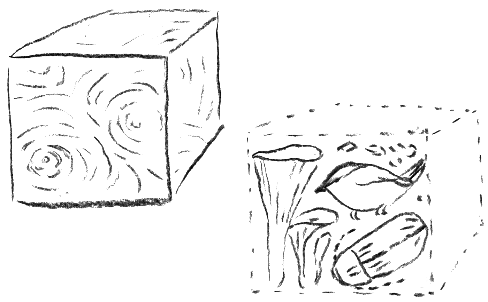

nature
yhteismitallistaminen
At the heart of the debate related to our forests lies the fact that the forest resources are limited and are subject to competing needs. This generates conflicts in politics and society. Different interests need to be coordinated and the discourse made public and accessible.
(text to be updated + chart of 3 strategies)